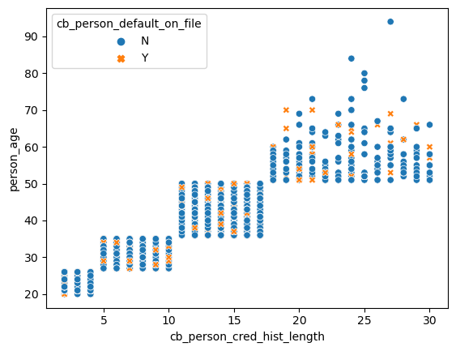
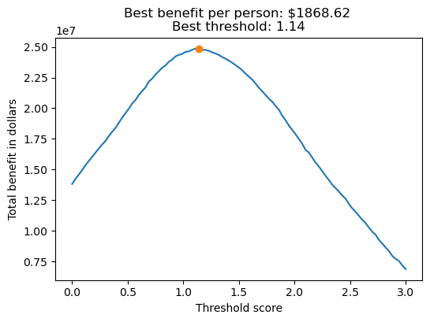
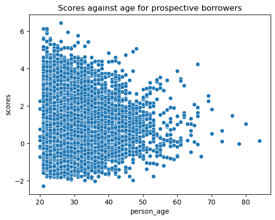
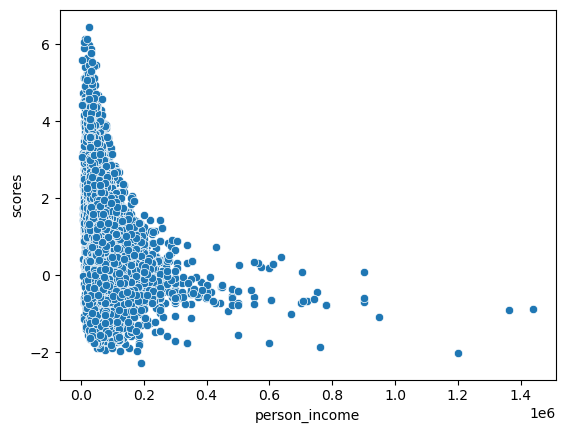

import pandas as pd
from matplotlib import pyplot as plt
import seaborn as sns
import numpy as np
url = "https://raw.githubusercontent.com/PhilChodrow/ml-notes/main/data/credit-risk/train.csv"
df_train = pd.read_csv(url)Abstract
In this blog post, we will walk through the process of training a linear regression model, creating a scoring function, and finding an optimal threshold for a scoring and classification problem. The dataset we are working with is one with data about prospective loan borrowers from a bank. It includes various characteristics of each person and the loan they are requesting. We will use this data to determine a threshold and scoring function to determine whether or not, if given the loan, the borrower is likely to default (or, in laymans terms, violate the terms of the loan by not paying/causing the bank to lose money). We will use the scikit-learn library again for this blog post
Part A: Grab the Data
To begin, let’s import the data:
We can take a look at the columns so that we know what attributes we are working with.
df_train.columnsIndex(['person_age', 'person_income', 'person_home_ownership',
'person_emp_length', 'loan_intent', 'loan_grade', 'loan_amnt',
'loan_int_rate', 'loan_status', 'loan_percent_income',
'cb_person_default_on_file', 'cb_person_cred_hist_length', 'scores'],
dtype='object')Part B: Explore The Data
Now, we can make a few figures to explore what the data is saying. First, I created a scatterplot to show the relationship between a person’s age and their credit history length. As can be inferred, older people generally have longer credit histories.
fig, ax = plt.subplots(1, 1)
# cut out the huge outlier--person making 6m/yr--so that we can see patterns more clearly
p1 = sns.scatterplot(df_train[df_train["person_age"] < 100], x = "cb_person_cred_hist_length", y = 'person_age', hue = 'cb_person_default_on_file', style = 'cb_person_default_on_file')
However, I was very interested in the fact that whether or not people defaulted on their loan seemed not to be reliant on age. There are orange x’s in all parts of the plot. Because of this, I wanted to look at the mean age for people who had a history of defaulting and people who didn’t.
df_train.groupby("cb_person_default_on_file")["person_age"].mean()cb_person_default_on_file
N 27.721878
Y 27.793096
Name: person_age, dtype: float64As you can see, although the average age for people who had defaulted was slightly bigger, they still both had averages of about 27. This was surprising to me because I had previously assumed that people who are older, and therefore have longer credit histories, would be more likely to have defaulted on a loan. I wonder if this is due to financial differences between generations.
Next, I wanted to look at interest rate based on history of defaulting. I assumed before making the plot that people who had defaulted before would be given a higher interest rate, and I was correct.
barplot = sns.barplot(df_train, x = "cb_person_default_on_file", y = "loan_int_rate")
barplot.set_title("Average loan interest rate separated by previous loan defaults")Text(0.5, 1.0, 'Average loan interest rate separated by previous loan defaults')Here, we can see that the average loan interest rate for those who had not defaulted on a loan previously is about 10%. For those who had, it was about 15%. A 5% increase is quite significant, and it seems like having a clean loan history would significantly benefit someone’s chances at getting a good interest rate.
Next, I wanted to look at the factors which played into loan intent. To do this, I created a table showing the home ownership counts per loan intent.
df_train.groupby("loan_intent")["person_home_ownership"].value_counts()loan_intent person_home_ownership
DEBTCONSOLIDATION RENT 2260
MORTGAGE 1841
OWN 62
OTHER 15
EDUCATION RENT 2612
MORTGAGE 2089
OWN 412
OTHER 14
HOMEIMPROVEMENT MORTGAGE 1384
RENT 1252
OWN 255
OTHER 11
MEDICAL RENT 2740
MORTGAGE 1730
OWN 352
OTHER 13
PERSONAL RENT 2171
MORTGAGE 1868
OWN 354
OTHER 15
VENTURE RENT 2135
MORTGAGE 1811
OWN 648
OTHER 20
Name: count, dtype: int64We can see here that there isn’t too much variation, but there are definitely differences that stand out. By far, the most popular type of loan for homeowners is a venture loan, and very few homeowners requested a debt consolidation loan. People with mortgages were spread out pretty evenly across the board, but home improvement had the least mortgagers. By far, home improvement was the least popular type of loan amongst renters. All of these make sense to me for a few reasons. Homeowners gravitated towards venture loans because, in general, they are likely to be more financially stable. Renters did not go for the home improvement loans because they likely don’t have much say in what gets done on the property they are renting. There are so few people in the “other” category that it is hard to pick out trends.
Next, we are going to prepare the data the same way that we did last time. We will split into x and y, removing the target variables from the training set. We will also get rid of null variables.
from sklearn.preprocessing import LabelEncoder
le = LabelEncoder()
le.fit(df_train["loan_status"])
def prepare_data(df):
df = df.dropna()
y = le.transform(df["loan_status"])
df = df.drop(["loan_status"], axis = 1)
df = pd.get_dummies(df)
return df, y
x_train, y_train = prepare_data(df_train)
x_train| person_age | person_income | person_emp_length | loan_amnt | loan_int_rate | loan_percent_income | cb_person_cred_hist_length | person_home_ownership_MORTGAGE | person_home_ownership_OTHER | person_home_ownership_OWN | ... | loan_intent_VENTURE | loan_grade_A | loan_grade_B | loan_grade_C | loan_grade_D | loan_grade_E | loan_grade_F | loan_grade_G | cb_person_default_on_file_N | cb_person_default_on_file_Y | |
|---|---|---|---|---|---|---|---|---|---|---|---|---|---|---|---|---|---|---|---|---|---|
| 1 | 27 | 98000 | 3.0 | 11750 | 13.47 | 0.12 | 6 | False | False | False | ... | False | False | False | True | False | False | False | False | False | True |
| 2 | 22 | 36996 | 5.0 | 10000 | 7.51 | 0.27 | 4 | False | False | False | ... | False | True | False | False | False | False | False | False | True | False |
| 3 | 24 | 26000 | 2.0 | 1325 | 12.87 | 0.05 | 4 | False | False | False | ... | False | False | False | True | False | False | False | False | True | False |
| 4 | 29 | 53004 | 2.0 | 15000 | 9.63 | 0.28 | 10 | True | False | False | ... | False | True | False | False | False | False | False | False | True | False |
| 6 | 21 | 21700 | 2.0 | 5500 | 14.91 | 0.25 | 2 | False | False | False | ... | False | False | False | False | True | False | False | False | True | False |
| ... | ... | ... | ... | ... | ... | ... | ... | ... | ... | ... | ... | ... | ... | ... | ... | ... | ... | ... | ... | ... | ... |
| 26059 | 36 | 150000 | 8.0 | 3000 | 7.29 | 0.02 | 17 | True | False | False | ... | False | True | False | False | False | False | False | False | True | False |
| 26060 | 23 | 48000 | 1.0 | 4325 | 5.42 | 0.09 | 4 | False | False | False | ... | True | True | False | False | False | False | False | False | True | False |
| 26061 | 22 | 60000 | 0.0 | 15000 | 11.71 | 0.25 | 4 | False | False | False | ... | False | False | True | False | False | False | False | False | True | False |
| 26062 | 30 | 144000 | 12.0 | 35000 | 12.68 | 0.24 | 8 | True | False | False | ... | False | False | False | True | False | False | False | False | True | False |
| 26063 | 25 | 60000 | 5.0 | 21450 | 7.29 | 0.36 | 4 | False | False | False | ... | False | True | False | False | False | False | False | False | True | False |
22907 rows × 26 columns
Part C: Build a Model
Now that the data is properly processed, we can train a logistic regression model. This will follow a similar process to the Penguins blog post, where we loop through all possible combinations of 3 features and add their scores and models to a list.
from itertools import combinations
from sklearn.linear_model import LogisticRegression
all_qual_cols = ["person_home_ownership", "loan_intent", "cb_person_default_on_file"]
all_quant_cols = ['person_age', 'person_income', 'person_emp_length', "loan_amnt", "loan_int_rate", "loan_percent_income", "cb_person_cred_hist_length"]
scores = []
combo_array = []
for qual in all_qual_cols:
qual_cols = [col for col in x_train.columns if qual in col ]
for pair in combinations(all_quant_cols, 2):
cols = list(pair) + qual_cols
combo_array.append(cols)
LR = LogisticRegression()
LR.fit(x_train[cols], y_train)
new_score = LR.score(x_train[cols], y_train)
scores.append((cols, new_score, LR))Now, we can find the maximum score in the list of results from the model. We can then split up our results into the attributes, the score, and the logistic regression model.
from operator import itemgetter
best_combo = max(scores, key = itemgetter(1))
print(best_combo)
best_attrs = best_combo[0]
best_score = best_combo[1]
best_lr = best_combo[2](['person_emp_length', 'loan_percent_income', 'person_home_ownership_MORTGAGE', 'person_home_ownership_OTHER', 'person_home_ownership_OWN', 'person_home_ownership_RENT'], 0.8482559916182826, LogisticRegression())Before we move on, we should make sure the model doesn’t perform drastically worse on unseen data. Below, we cross-validate our model.
from sklearn.model_selection import cross_val_score
cv_scores_LR = cross_val_score(best_lr, x_train[best_attrs], y_train, cv=5)
print(cv_scores_LR.mean())
cv_scores_LRWe could have gone through and cross-validated all the possible models, but this score is close enough to our initial score that it is okay to continue.In fact, it performed slightly better on the cross-validation than on the training data. Let’s continue.
Below, we can extract the w vector (weights) from our best logistic regression model.
w = pd.Series(best_lr.coef_[0])
w0 -0.019247
1 8.281007
2 -0.735289
3 -0.107546
4 -1.795208
5 0.265245
dtype: float64Part D: Find a Threshold
Now we begin the process of determining what the most profitable threshold is for the bank. We can start by defining our scoring function, which is just going to be the dot product of the weight vector w.
def score_function(w, x):
return x@wWe can also plot out these scores by frequency:
x_train['scores'] = score_function(w.values, x_train[best_attrs])
fig, ax = plt.subplots(1, 1, figsize = (6, 4))
hist = ax.hist(x_train['scores'], bins = 50, color = "steelblue", alpha = 0.6, linewidth = 1, edgecolor = "black")
labs = ax.set(xlabel = r"Score", ylabel = "Frequency") 
Most of the scores fall between 0 and 2. This gives us an idea for where the threshold may fall as well.
We can now define the benefit function. We are going to stick with the function given in the assignment, because I do not know much about bank profits!
def get_benefit(loan_amt, loan_int_rate, default):
loan_int_rate = loan_int_rate/100
if default == False:
cost = loan_amt*(1 + 0.25*loan_int_rate)**10 - loan_amt
else:
cost = loan_amt*(1 + 0.25*loan_int_rate)**3 - 1.7*loan_amt
return costNext, I added a column into the dataset for c (profit for someone who doesn’t default) and C (profit for someone who defaults). This helps me to be able to filter more easily in the future! I made sure to apply the function to the whole pandas series for each column, since Pandas can handle vector arithmetic.
x_train['c'] = get_benefit(x_train["loan_amnt"], x_train["loan_int_rate"], False)
x_train['C'] = get_benefit(x_train["loan_amnt"], x_train["loan_int_rate"], True)
x_train.head()| person_age | person_income | person_emp_length | loan_amnt | loan_int_rate | loan_percent_income | cb_person_cred_hist_length | person_home_ownership_MORTGAGE | person_home_ownership_OTHER | person_home_ownership_OWN | ... | loan_grade_C | loan_grade_D | loan_grade_E | loan_grade_F | loan_grade_G | cb_person_default_on_file_N | cb_person_default_on_file_Y | scores | c | C | |
|---|---|---|---|---|---|---|---|---|---|---|---|---|---|---|---|---|---|---|---|---|---|
| 1 | 27 | 98000 | 3.0 | 11750 | 13.47 | 0.12 | 6 | False | False | False | ... | True | False | False | False | False | False | True | 1.201226 | 4613.567568 | -6997.533847 |
| 2 | 22 | 36996 | 5.0 | 10000 | 7.51 | 0.27 | 4 | False | False | False | ... | False | False | False | False | False | True | False | 2.404884 | 2044.334031 | -6426.108799 |
| 3 | 24 | 26000 | 2.0 | 1325 | 12.87 | 0.05 | 4 | False | False | False | ... | True | False | False | False | False | True | False | 0.640802 | 493.650464 | -795.445199 |
| 4 | 29 | 53004 | 2.0 | 15000 | 9.63 | 0.28 | 10 | True | False | False | ... | False | False | False | False | False | True | False | 1.5449 | 4028.690420 | -9390.333437 |
| 6 | 21 | 21700 | 2.0 | 5500 | 14.91 | 0.25 | 2 | False | False | False | ... | False | True | False | False | False | True | False | 2.297004 | 2430.522429 | -3211.752128 |
5 rows × 29 columns
Now for the actual calculations! Below, we loop through 101 possible threshold values and find the benefit for each one. We maintain an array of thresholds and an array of benefits for easy plotting.
best_benefit = 0
best_threshold = 0
t_arr = []
benefits = []
fig, ax = plt.subplots(1, 1, figsize = (6, 4))
for t in np.linspace(0, 3, 101):
y_pred = x_train['scores'] >= t
tn = ((y_pred == 0) & (y_train == 0)).mean()
fn = ((y_pred == 0) & (y_train == 1)).mean()
benefit = x_train['c'][x_train['scores'] >= t].sum()*tn - x_train['C'][x_train['scores'] >= t].sum()*fn
t_arr.append(t)
benefits.append(benefit)
if benefit > best_benefit:
best_benefit = benefit
best_threshold = t
plt.plot(t_arr, benefits)
plt.plot(best_threshold, best_benefit, marker="o")
plt.title(f"Best benefit per person: ${(best_benefit/len(x_train[x_train["scores"] < best_threshold])).round(2)} \nBest threshold: {best_threshold}")
plt.xlabel("Threshold score")
plt.ylabel("Total benefit in dollars")Text(0, 0.5, 'Total benefit in dollars')
We have outputted this plot which shows us the curve of threshold plotted against benefit! We can also see that our best benefit per borrower is $1,868.62, and our optimal threshold is 1.14. Now, let’s test this model and threshold against our testing data. Hopefully, since we did well with the cross-validation, we will do well on the yet unseen data.
Part E: Evaluate Your Model from the Bank’s Perspective
url = "https://raw.githubusercontent.com/PhilChodrow/ml-notes/main/data/credit-risk/test.csv"
df_test = pd.read_csv(url)
x_test, y_test = prepare_data(df_test)
x_test['c'] = get_benefit(x_test["loan_amnt"], x_test["loan_int_rate"], False)
x_test['C'] = get_benefit(x_test["loan_amnt"], x_test["loan_int_rate"], True)t = best_threshold
# compute the scores
x_test['scores'] = score_function(w.values, x_test[best_attrs])
preds = x_test['scores'] >= t
# compute error rates
FN = ((preds == 0) & (y_test == 1)).mean()
TN = ((preds == 0) & (y_test == 0)).mean()
# compute the expected gain
gain = x_test['c'][x_test['scores'] >= t].sum()*TN - x_test['c'][x_test['scores'] >= t].sum()*FN
gain/len(x_test[x_test["scores"] < t])np.float64(1361.3320954051185)Our profit per borrower is $1,361.33. Not as much as in our training data, but not bad!
Part F: Evaluate Your Model From the Borrower’s Perspective
1. Is it more difficult for people in certain age groups to access credit under your proposed system?
Let’s look at a plot and find out.
plot = sns.scatterplot(x_train[x_train["person_age"] < 100], x = "person_age", y = "scores")
plot.set_title("Scores against age for prospective borrowers")Text(0.5, 1.0, 'Scores against age for prospective borrowers')
It doesn’t look like there is much correlation between score and age.
Is it more difficult for people to get loans in order to pay for medical expenses? How does this compare with the actual rate of default in that group? What about people seeking loans for business ventures or education?
Let’s check out the data:
df_train["scores"] = x_train["scores"]
df_train.groupby("loan_intent")["scores"].max()loan_intent
DEBTCONSOLIDATION 6.14476
EDUCATION 6.449154
HOMEIMPROVEMENT 6.06195
MEDICAL 5.965717
PERSONAL 6.137947
VENTURE 5.89633
Name: scores, dtype: objectSo the maximum score for medical is lower than almost all the other maximum scores. However, this may not reflect the average score given to medical borrowers.
df_train.groupby("loan_intent")["scores"].mean()loan_intent
DEBTCONSOLIDATION 1.114447
EDUCATION 1.00498
HOMEIMPROVEMENT 0.873225
MEDICAL 1.100077
PERSONAL 0.969918
VENTURE 0.900046
Name: scores, dtype: objectHere, we can see that the average score for a medical loan request is actually higher than many of the other categories. In general, the Venture category has a low score for both the max score and the mean score. Debt consolidation tends to score hgih, as does education. Medical flips from the high end (mean) to the low end (max). We can also look at the count of each that got a loan, as opposed to the true default values.
df_train[df_train["scores"] >= best_threshold].groupby("loan_intent").size() - df_train[df_train["scores"] >= best_threshold][df_train["loan_status"] == 0].groupby("loan_intent").size()/var/folders/sy/9tmrg3gx65vf4qjw8jl8ytsc0000gn/T/ipykernel_82223/2869003493.py:1: UserWarning: Boolean Series key will be reindexed to match DataFrame index.
df_train[df_train["scores"] >= best_threshold].groupby("loan_intent").size() - df_train[df_train["scores"] >= best_threshold][df_train["loan_status"] == 0].groupby("loan_intent").size()loan_intent
DEBTCONSOLIDATION 648
EDUCATION 574
HOMEIMPROVEMENT 424
MEDICAL 718
PERSONAL 534
VENTURE 468
dtype: int64Here, we calculated the number of people in each loan intent group that were above the threshold and defaulted. Overall, it seems like the error rate among groups was pretty equal when you consider the size of the groups.
How does a person’s income level impact the ease with which they can access credit under your decision system?
sns.scatterplot(x = x_train[x_train["person_income"] < 2000000]["person_income"], y = x_train["scores"])
Overall, it seems like lower-income people are more likely to receive a higher score. This is interesting to me because I would assume those who are higher income would be more likely to pay off their loans. However, maybe interest rates are higher among lower-income people in this dataset. Also, it could have something to do with the reasons people are requesting loans.
Part G: Write and Reflect
Considering that people seeking loans for medical expense have high rates of default, is it fair that it is more difficult for them to obtain access to credit?
I think this depends on whether you are thinking from a utilitarian or ethical view of fairness. I also think that fairness is not necessary always ethical in the ways people use it. I believe that it is unfair that people who need help cannot access it, and I think it is sad that profits are often prioritized over people. However, I can see how someone would argue that while it is unethical to deny someone a medical loan, it may still be fair. Basing loans off of likelihood of default is an objective way of making the decision, and I think some people see objectivity as fairness.